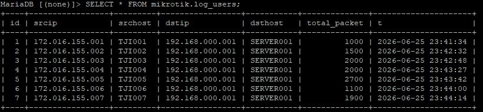

Membaca QUERY dari file
Mengapa materi ini penting, supaya kita tak perlu menulis proses query yang panjang seperti CREATE, INSERT INTO dll.
Karena untuk studi kasus pembelajaran kedepanya, kita tak perlu menulis query untuk punya data table di dalam DB, tinggal baca file sql yang telah anda download
Misal ini lokasi file sql ada di "/home/support/mikrotik.sql" ~ direktori anda kemungkinan berbeda / dan saya menggunakan linux
SOURCE /home/support/mikrotik.sql
Jika pembacaan file sql ini sukses harusnya akan ada db "mikrotik" dengan table "log_users" dan isi data pada table seperti dibawah ini

DB mikrotik ini dengan table log_users akan kita pakai terus kedepanya, jadi jangan dihapus.
"Secara teknis file *.sql kurang tepat dikatakan di import, tapi dibaca yaitu dengan SOURCE, Karena pada dasarnya *.sql bukan data mentah.
Walaupun hasil akhir SOURCE adalah membuat data dari luar bisa masuk ke server.
Jadi secara teknis, istilah import lebih tepat diterapkan ke file file data mentah seperti *.csv" ~Fiance Ticoalu